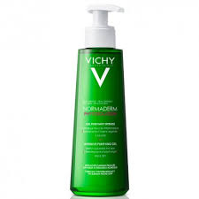
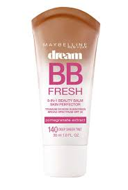
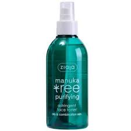

Es ideal para el cuidado de la piel mixta a grasa, con poros obstruidos e imperfecciones, y que a la vez es sensible y no tolera cualquier producto.Este gel limpiador es rico en Ácido salicílico Totarol y Eperulina, que le brindan un efecto purificante y anti-irritante a la piel. Su textura es súper refrescante y hace que la piel del rostro se vea más limpia, suave, luminosa y saludable.
Es una crema que hidrata, ilumina y unifica el tono de la piel, haciéndola ver más fresca y radiante, y a la vez disimula imperfecciones y camufla rojeces. Es una crema que actúa como una base de maquillaje pero muchísimo más liviana y ligera (mejor que una base, diría yo) pues cuando la colocas ni siquiera parece que te hubieras puesto algo. Por si fuera poco, también posee protección solar.
Este tónico a la baya de açaí -ese fruto brasileño tan de moda como superalimento como de principio activo en cosmética- con ácido hialurónico, hidrata y refresca a partes iguales, y puedes utilizarlo tanto de día como de noche. La verdad es que esta línea antioxidante pensada para pieles cansadas y apagadas es una maravilla
